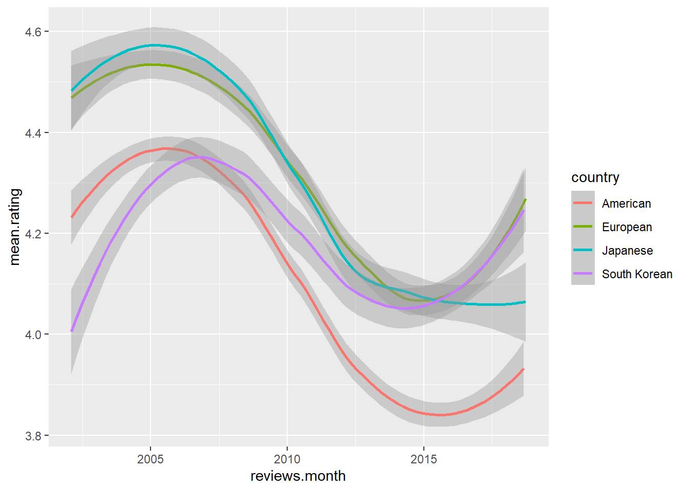
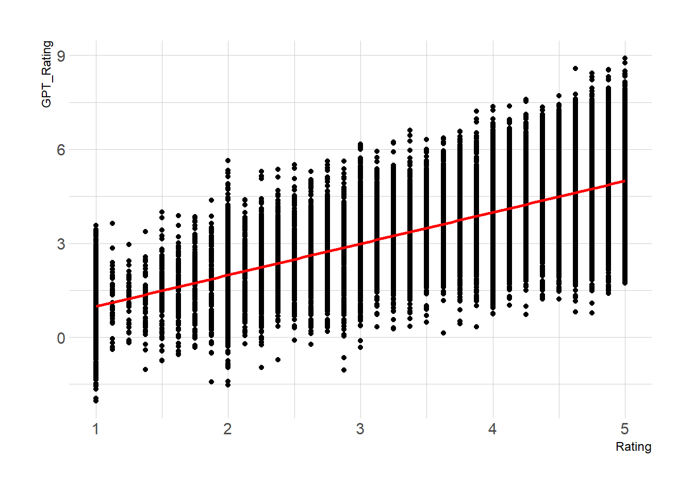

1 + 1[1] 2Consumer Car Reviews from Edmunds.com
Quarto enables you to weave together content and executable code into a finished document. To learn more about Quarto see https://quarto.org.
text analysis has long been a complicated and not always super insightful exercise. not anymore. now it’s vastly more powerful, insightful, and accessible.
When you click the Render button a document will be generated that includes both content and the output of embedded code. You can embed code like this:
You can add options to executable code like this
[1] 4The echo: false option disables the printing of code (only output is displayed). Does this work?
Does this work?
df_dodge <- read_csv("data\\Scraped_Car_Review_dodge.csv", show_col_types = FALSE) |> mutate(make = "Dodge") New names:
• `` -> `...1`Rows: 8,499
Columns: 8
$ ...1 <dbl> 0, 1, 2, 3, 4, 5, 6, 7, 8, 9, 10, 11, 12, 13, 14, 15, 16…
$ Review_Date <chr> "on 10/13/05 15:30 PM (PDT)", "on 07/17/05 21:59 PM (PDT…
$ Author_Name <chr> "roadking", "Mark", "Tom Sheer", "Keven Smith", "VanMan"…
$ Vehicle_Title <chr> "2002 Dodge Ram Cargo Van 1500 3dr Van (3.9L 6cyl 3A)", …
$ Review_Title <chr> "Great delivery vehicle", "Disappointmnet", "Sweet van",…
$ Review <chr> "It's been a great delivery vehicle for my cafe business…
$ Rating <dbl> 4.625, 2.125, 5.000, 4.500, 2.875, 2.250, 3.000, 4.625, …
$ make <chr> "Dodge", "Dodge", "Dodge", "Dodge", "Dodge", "Dodge", "D…df_ford <- read_csv("data\\Scraped_Car_Review_ford.csv", show_col_types = FALSE) |> mutate(make = "Ford") New names:
• `` -> `...1`Rows: 20,717
Columns: 8
$ ...1 <dbl> 0, 1, 2, 3, 4, 5, 6, 7, 8, 9, 10, 11, 12, 13, 14, 15, 16…
$ Review_Date <chr> "on 06/06/18 14:19 PM (PDT)", "on 08/12/17 06:06 AM (PDT…
$ Author_Name <chr> "Vicki", "Tom", "Ray", "Don Watson", "One owner", "Adam"…
$ Vehicle_Title <chr> "2006 Ford Mustang Coupe GT Premium 2dr Coupe (4.6L 8cyl…
$ Review_Title <chr> "2006 Mustang GT", "DREAM CAR", "Great Ride", "I have wa…
$ Review <chr> "Doesn’t disappoint", "I bought mine 4/17 with 98K. Have…
$ Rating <dbl> 5.000, 3.000, 5.000, 5.000, 5.000, 3.000, 4.625, 4.375, …
$ make <chr> "Ford", "Ford", "Ford", "Ford", "Ford", "Ford", "Ford", …df_toyota <- read_csv("data\\Scrapped_Car_Reviews_Toyota.csv", show_col_types = FALSE) |> mutate(make = "Toyota") New names:
• `` -> `...1`Rows: 18,747
Columns: 8
$ ...1 <dbl> 0, 1, 2, 3, 4, 5, 6, 7, 8, 9, 10, 11, 12, 13, 14, 15, 16…
$ Review_Date <chr> "on 02/02/17 19:53 PM (PST)", "on 12/17/16 16:40 PM (PST…
$ Author_Name <chr> "Ricardo", "matt", "Joel G", "Dennis", "Alf Skrastins", …
$ Vehicle_Title <chr> "1997 Toyota Previa Minivan LE 3dr Minivan", "1997 Toyot…
$ Review_Title <chr> "great vehicle, Toyota best design ever. thank you", "my…
$ Review <chr> "there is no way back, enjoy what you have .", "1st 95 w…
$ Rating <dbl> 5.000, 5.000, 5.000, 4.875, 5.000, 4.875, 5.000, 4.625, …
$ make <chr> "Toyota", "Toyota", "Toyota", "Toyota", "Toyota", "Toyot…df <- bind_rows(df_dodge, df_ford, df_toyota)
# remove leading words & spaces from date variable
df <- df %>%
mutate(Review_Date = str_replace_all(Review_Date, "on ", ""),
Review_Date = str_replace_all(Review_Date, "PDT", ""),
Review_Date = str_replace_all(Review_Date, " PST", ""),
Review_Date = str_replace_all(Review_Date, "[()]", ""),
Review_Date = str_trim(Review_Date),
Review_Date = mdy_hm(Review_Date))
glimpse(df)Rows: 47,963
Columns: 8
$ ...1 <dbl> 0, 1, 2, 3, 4, 5, 6, 7, 8, 9, 10, 11, 12, 13, 14, 15, 16…
$ Review_Date <dttm> 2005-10-13 15:30:00, 2005-07-17 21:59:00, 2002-07-16 00…
$ Author_Name <chr> "roadking", "Mark", "Tom Sheer", "Keven Smith", "VanMan"…
$ Vehicle_Title <chr> "2002 Dodge Ram Cargo Van 1500 3dr Van (3.9L 6cyl 3A)", …
$ Review_Title <chr> "Great delivery vehicle", "Disappointmnet", "Sweet van",…
$ Review <chr> "It's been a great delivery vehicle for my cafe business…
$ Rating <dbl> 4.625, 2.125, 5.000, 4.500, 2.875, 2.250, 3.000, 4.625, …
$ make <chr> "Dodge", "Dodge", "Dodge", "Dodge", "Dodge", "Dodge", "D…df.bymonth <- df |>
#mutate(reviews.month = round_date(Review_Date, "month")) |> # reviews by month-year
mutate(reviews.month = round_date(Review_Date, "3 months")) |> # reviews by month-year
#filter(Review_Date >= as.POSIXct("2014-01-01")) |>
group_by(make, reviews.month) |>
summarise(
mean.rating = mean(Rating, na.rm=TRUE),
num.reviews = n()
)`summarise()` has grouped output by 'make'. You can override using the
`.groups` argument.Rows: 202
Columns: 4
Groups: make [3]
$ make <chr> "Dodge", "Dodge", "Dodge", "Dodge", "Dodge", "Dodge", "D…
$ reviews.month <dttm> 2002-04-01, 2002-07-01, 2002-10-01, 2003-01-01, 2003-04…
$ mean.rating <dbl> 4.116834, 4.145455, 4.210106, 4.090802, 4.185142, 4.2671…
$ num.reviews <int> 199, 165, 188, 212, 212, 262, 271, 288, 283, 269, 185, 1…p <- ggplot(df.bymonth, aes(x=reviews.month, y=mean.rating, group=make, color=make)) +
geom_line()
p
df |>
slice_sample(n = 1000) |>
filter(Rating < 2) |>
select(make, Review_Title, Review) |>
View()
# positive
# negative
# neutral
# among those with negative review
# reliability
#
# among those with positive review
# engine power / performance
# build quality
# smooth handling
# reliability and durability
# technology and/or connectivity
# gas mileage / fuel efficiency
# safety
# cargo space
# driver assistance
# comfort features / car noise / ride quality
# niche issues
# electrical problems
# transmission problems
# other
# resale value
# brand loyalty?
#edmunds categories: utility driving comfort interior technologydf$GPT_Rating <- df$Rating + rnorm(length(df$Rating),0,1)
# linear trend + confidence interval
p3 <- ggplot(df, aes(x=Rating, y=GPT_Rating)) +
geom_point() +
geom_smooth(method=lm , color="red", fill="#69b3a2", se=TRUE) +
theme_ipsum()
p3`geom_smooth()` using formula = 'y ~ x'Warning in grid.Call(C_stringMetric, as.graphicsAnnot(x$label)): font family
not found in Windows font database
Warning in grid.Call(C_stringMetric, as.graphicsAnnot(x$label)): font family
not found in Windows font databaseWarning in grid.Call.graphics(C_text, as.graphicsAnnot(x$label), x$x, x$y, :
font family not found in Windows font database
Warning in grid.Call.graphics(C_text, as.graphicsAnnot(x$label), x$x, x$y, :
font family not found in Windows font database
Warning in grid.Call.graphics(C_text, as.graphicsAnnot(x$label), x$x, x$y, :
font family not found in Windows font database
# confusion matrix approach
# Define the bin breaks and labels
bin_breaks <- c(-Inf, 2.5, 3.5, 5)
bin_labels <- c("Negative", "Neutral", "Positive")
# Use cut() to bin the age variable
df <- df %>%
mutate(Rating_cat = cut(Rating, breaks = bin_breaks, labels = bin_labels, include.lowest = TRUE))
df |>
slice_sample(n = 1000) |>
select(Rating, Rating_cat) |>
View()results by American, European, Japanesse, and South Korean automakers